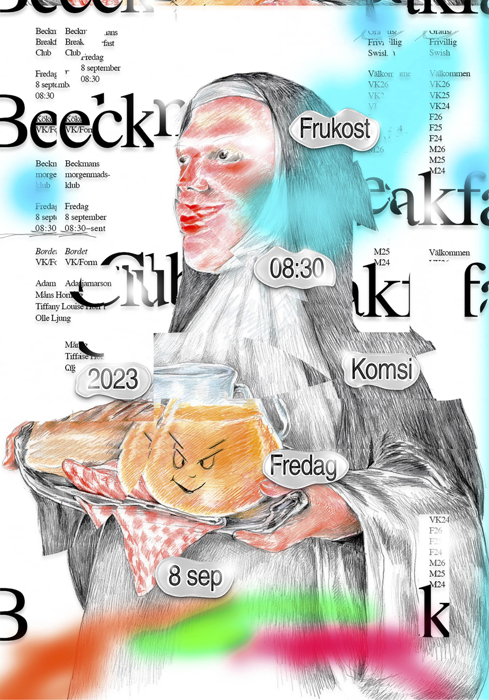
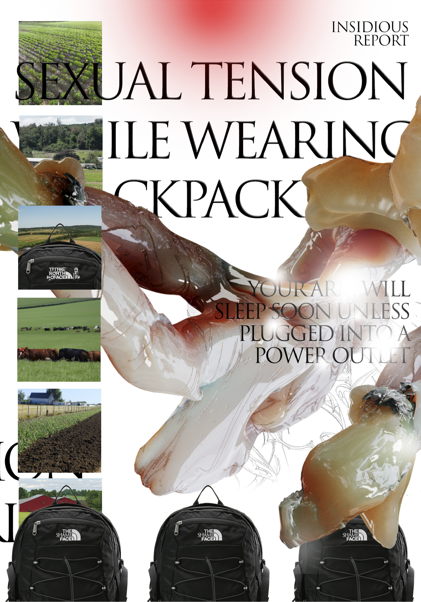
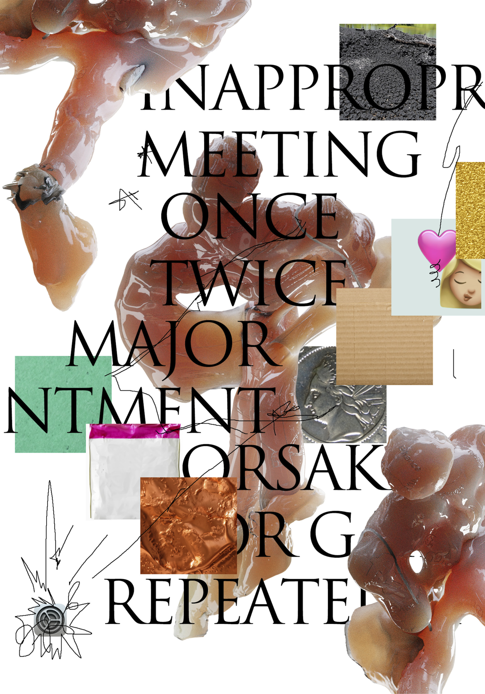
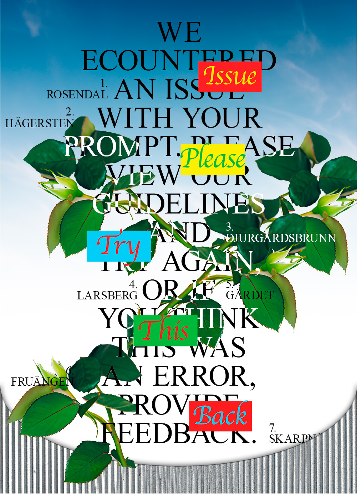
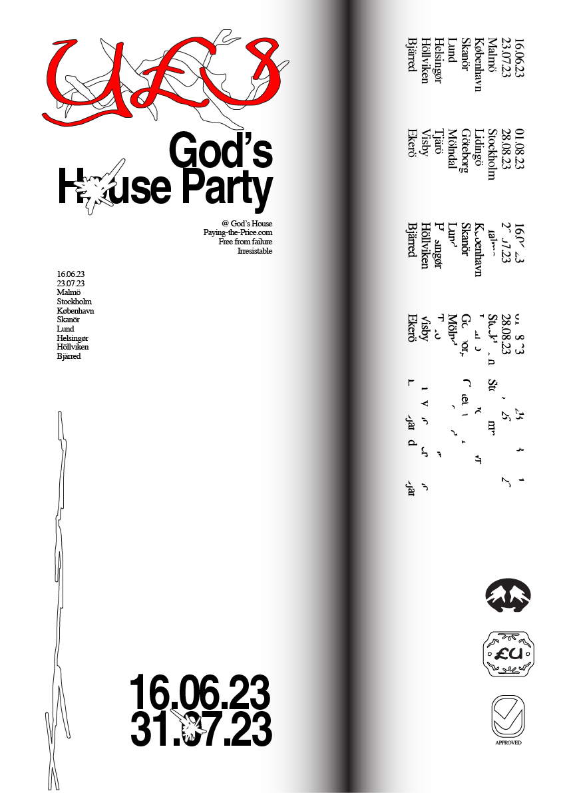

Posters

I like making posters for myself, for friends, for fun or for work. These are a few posters I've made in the last months. Illustrations are mine, photos are generated or downloaded.








